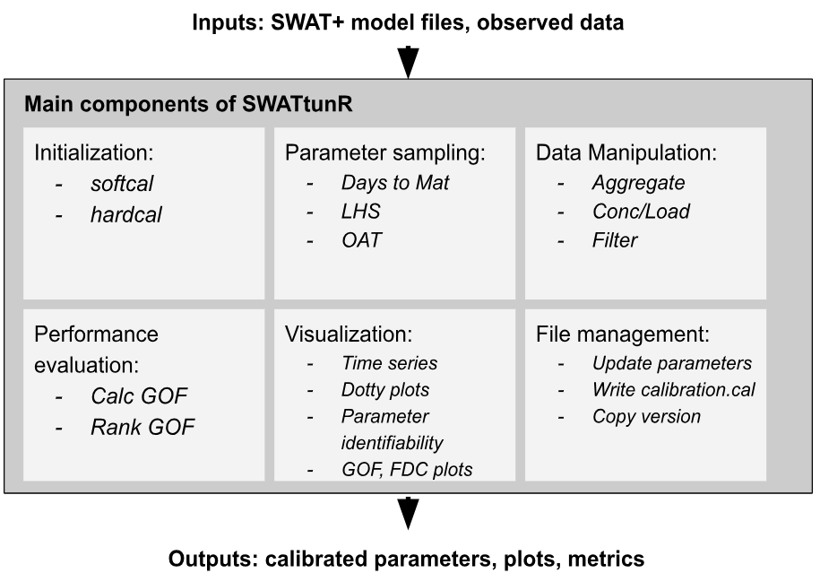
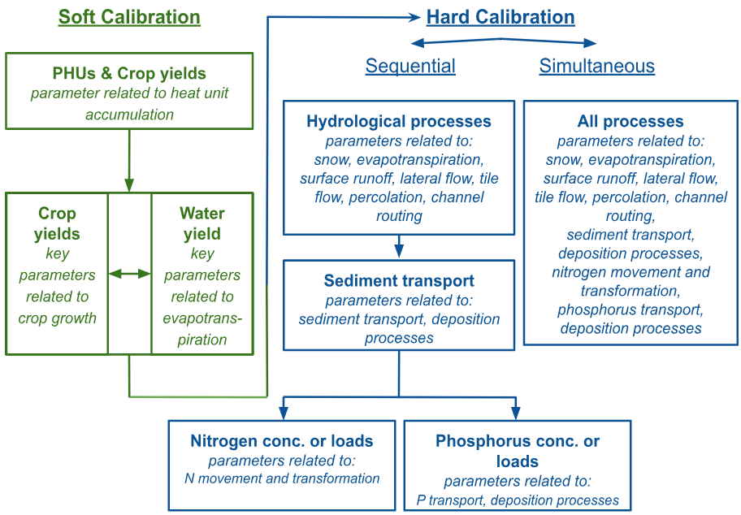

Introduction to SWATtunR
SWATtunR is an open-source R package designed to automate and enhance the calibration and validation of SWAT+ (Soil and Water Assessment Tool) models. It provides a flexible and comprehensive suite of functions and workflows to support users in building fully scripted, reproducible hydrological modeling processes in R.
The package integrates with other SWAT-related R packages as SWATbuildR, SWATprepR, SWATfarmR, SWATdoctR, SWATrunR, SWATmeasR, SWATreadR, and SWATdata — forming a powerful and interoperable ecosystem of tools for hydrological and environmental modelers working with SWAT/SWAT+ models.
Key functionalities of SWATtunR include:
- Workflow initialization and setup
- Parameter sampling strategies
- Input and output data manipulation
- Performance evaluation metrics
- Advanced visualization of calibration and validation results
- Model file management tools
To use SWATtunR, users must provide a working SWAT+ model setup along with the corresponding observed data. The package then guides in performing calibration and validation by adjusting parameters in three key SWAT+ input files:
-
plants.plt– crop yield (soft calibration) -
hydrology.hyd– water yield ratio (soft calibration) -
calibration.cal– model calibration parameters (hard calibration)

Calibration Workflow
The calibration process in SWATtunR is divided into two main stages: soft and hard calibration.
Soft calibration focuses on improving plant growth and water balance without altering core model dynamics. It involves:
-
Step 1: Calibrate the crop growth parameter
(
days_mat) to achieve reasonable Plant Heat Unit (PHU) fractions before harvest (typically between 1.00 and 1.25).
-
Step 2–3 (Optional): Adjust additional crop yield
parameters (
lai_pot,harv_idx,tmp_base,bm_e) to align simulated yields with observed data.
-
Step 2–3: Calibrate evapotranspiration components
(
esco,epco) to match observed water yield ratios.
If crops fail to reach full maturity or the yield is unrealistic, crop management or the parameter ranges may need revision.
Hard calibration fine-tunes model parameters to observed discharge, sediment, and nutrient data. Two strategies are supported:
- Sequential calibration: Stepwise adjustment of hydrological, sediment, and nutrient processes.
- Simultaneous calibration: Joint tuning of all processes, improving fit for interrelated components like streamflow, nutrients, and sediments.
SWATtunR supports flexible workflows, including multi-site calibration, use of hydrological signatures, and multi-criteria performance evaluation to ensure robust model performance across varying conditions.
